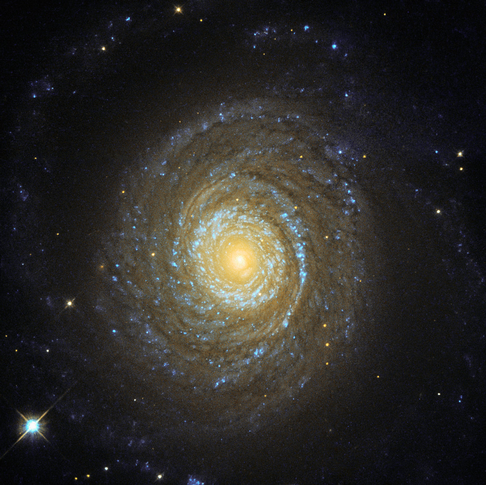

Galaxen NGC 6753 är en ostavspårad spiralgalax. Det betyder att armarna i galaxen utgår från en klotformig kärna. Även om den ligger 142 miljoner ljusår från vintergatan, ser det ut som att den riktar sig mot oss. Det skulle också kunna likna ett öga som kollar rakt mot oss. Galaxen upptäcktes 5 juli 1836 av den engelska astronomen John Herschel.